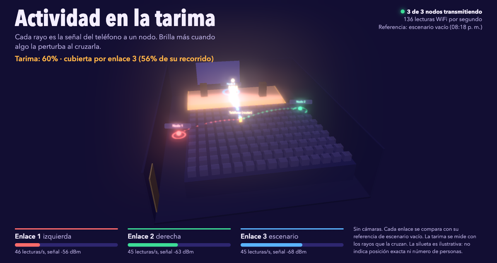

El WiFi que ve moverse la sala.
Un teléfono hace de router y tres nodos ESP32-S3 escuchan su señal. Cuando alguien cruza un enlace, el rayo se enciende en una sala 3D en vivo. Sin cámaras.

Cómo funciona
Un teléfono emite WiFi
El hotspot del teléfono es el transmisor. Entre él y cada nodo hay un «enlace»: la línea por la que viaja la señal.
Tres ESP32-S3 escuchan
Cada nodo mide la señal que recibe (RSSI y CSI) y la envía por UDP al servidor, decenas de veces por segundo.
RuView la compara
El servidor en Rust de RuView recibe los datos y la Sala 3D compara cada enlace con su referencia de escenario vacío. Si un cuerpo lo cruza, el rayo brilla.
Qué muestra y qué no
Sí muestra
- Cuánto se perturba cada enlace frente al escenario vacío.
- Actividad en la tarima, medida con los rayos que la cruzan.
- Cuántos nodos transmiten y cuántas lecturas por segundo llegan.
No muestra
- Número de personas ni su posición exacta.
- Pose, esqueleto ni signos vitales.
- Nada comparable a una cámara: es una señal de radio, no una imagen.
ESTADO Demo cualitativa en vivo. No publicamos métricas de precisión: no hay un conjunto de prueba ni una medición reproducible todavía. Si haces una, ¡compártela!
Pruébalo
git clone --depth 1 -b rulostark/live-demo-sala3d \
https://github.com/ruloCode/RuView.git
cd RuView
./start-rulostark-rust.shAbre http://localhost:3000/ui/rulostark/sala3d.html y pega el token que imprime el script. Para detener todo: ./start-rulostark-rust.sh stop.
Sin hardware
El script crea docker/.env con CSI_SOURCE=simulated: verás la sala con datos sintéticos.
Con tus ESP32-S3
Provisiona los nodos según firmware/esp32-csi-node, apunta su target-ip a tu Mac (UDP 5005) y cambia a CSI_SOURCE=esp32.
Requisitos
Probado en macOS con Docker vía Colima y Python 3.